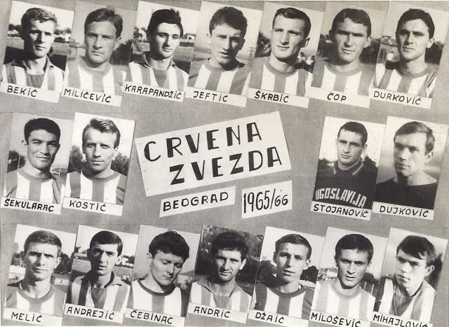
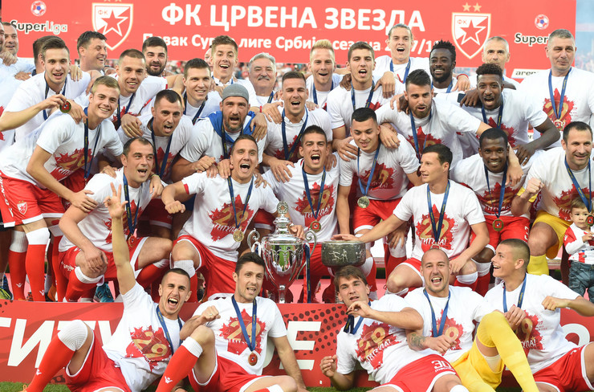

ФК Црвена Звезда
(Историјат)
Фудбалски клуб Црвена звезда основан је 4. марта 1945. године, на иницијативу чланова Уједињеног савеза антифашистичке омладине Србије. Првобитно, месец дана раније - у фебруару исте године, основано је ново омладинско фискултурно друштво које је брзо прерасло у спортски колектив и добило име „Црвена звезда“.
Прва утакмица одиграна је на сам дан оснивања, а ривал је био Први батаљон Друге бригаде КНОЈ-а. Наш тим је славио резултатом 3:0 на игралишту „Студента“. Црвена звезда је тада наступала у следећем саставу: Голубичић (Попадић), Станковић, Филиповић, Печенчић, Ћирић, Јовановић, Величковић, Томашевић, Шапинац (Стокић), Спасојевић и Хорватовић. Стрелац првог, историјског гола за Црвену звезду, био је Коста Томашевић. Током прве године постојања, Црвена звезда је одиграла укупно 36 мечева. Забележила је 30 победа, нерешено је било пет пута, а једини пораз доживљен је у Темишвару против Румуније.
За првог председника клуба изабран је Ђорђе Паљић, за потпредседнике Слободан Ћосић и Зоран Жујовић, за секретара Љубиша Секулић, за благајника Душан Богдановић, а економ је био Предраг Ђајић.
Први трофеји
Први трофеј - трофеј Првенства Србије, освојен је 1946. године. У завршном такмичењу у мају и јуну 1946. године, учествовало је шест тимова. Црвена звезда је освојила прво место победивши Железничар у Нишу, Металац у Београду, Јединство у Смедереву и Раднички у Крагујевцу. Једини меч који је наш тим изгубио био је против Борца из Чачка.
Године 1948. освојен је први Куп, а у финалу са убедљивих 3:0 побеђен је Партизан. Следи период константног освајања одличја и после три пехара у најмасовнијем такмичењу, 1951. године у незабележеној трилер завршници првенства најтрофејнији српски клуб стиже и до наслова најбољег у Државном првенству. Сустигли смо предност загребачког Динама од пет бодова (тада се победа бодовала са два бода) у последња три кола, а одушевљени навијачи запалили су новине на стадиону и на раменима носили своје јунаке кроз Београд. У наредним деценијама Црвена звезда израста у гиганта светског формата, са препознатљивом брзом и ефикасном игром.
Улазак на врата Европе
Следи 1957. година која је Црвеној звезди донела пету титулу првака, као и први велики европски успех. Црвено-бели су заиграли на међународној европској сцени, и одиграли су полуфинале у Купу европских Шампиона. Италијанска Фиорентина је славила са 1:0 у Београду, док је меч у Италији завршен нерешеним резултатом. Годину дана касније у витрине нашег клуба стигао је и први европски трофеј - Дунавски Куп. До наредног европског трофеја чекало се пуних 10 година, а потом је 1968. године поново освојен, како се тада звао, Средњоевропски Куп.
Сјај 1970-их
Црвена звезда је доминирала у националним такмичењима, и време је дошло да се оде степеник више. Прва велика прилика пропуштена је 1971. године, када је по други пут у својој историји, Црвена звезда играла полуфинале Купа европских шампиона. На Маракани је убедљиво савладан Панатанаикос резултатом 4:1, док је још увек необјашњив пораз у реваншу од 3:0. Потом је 1975. године Црвена звезда одиграла полуфинале Купа победника Купова. Ривал из Мађарске, Ференцварош, био је успешнији. Први меч је завршен резултатом 2:1 у корист Ференцвароша, док је реванш у Београду завршен нерешеним резултатом.
Трећа велика прилика пропуштена је у финалу Купа Уефа 1979. године, када је Црвена звезда, након судијске неправде, поражена од Борусије из Мехенгладбаха. У Купу УЕФА прво је савладан Динамо из Берлина, затим је побеђен Спортинг из Хихона, Арсенал, Вест Бромвич Албион, Херта. У финалу смо се сусрели са Борусијом. Први меч у Београду је завршен нерешеним резултатом (1:1). У реваншу, судија из Италије Паоло Микелоти је досудио непостојећи пенал који је донео победу Борусији.
Наредних скоро деценију и по црвено-бели су били редован учесник евро-купова, побеђени су многи фудбалски џинови, а Црвена звезда је захваљујући сјајним играма и врхунским велемајсторима у својим редовима, постала симбол источно-европског фудбала. Три пута је, након финала Купа УЕФА, Црвена звезда играча четвртфинале Купа европских Шампиона. Први пут 1981. године, када је противник био Интер. Први меч је одигран у Милану, резултат је био нерешен, 1:1. У реванш мечу славио је Интер. Наредне године, у двомечу против Андерлехта, Црвена звезда је поражена (у оба меча) резултатом 2:1. Пет година касније, 1987. године, у четвртфиналу је ривал био славни Реал из Мадрида којег је наш тим савладао пред пуним стадионом у Београду резултатом 4:2. У реванш мечу који је уследио, наш тим је био поражен 2:0 у Мадриду, и због голова постигнутих у гостима даље се пласирао шпански првак.
Златна генерација 1991.
Награда за године успешног рада на Маракану је коначно стигла 1991. године када Златна генерација српског клуба осваја Европу и свет. У финалу Купа европских шампиона побеђен је Олимпик из Марсеја, након извођења једанаестераца. Само неколико месеци касније, у Токију, пехар намењен светском клупском прваку такође је заблистао у трофејној сали стадиона „Рајко Митић“. И наредне године, Црвена звезда је наступала у Купу европских шампиона, али због увођења санкција није одиграла ниједну утакмицу пред својим верним навијачима. Сампдорија је била задња препрека коју је наш тим требало да савлада како би поново играо финале овог такмичења. Утакмица која се играла у Софији завршена је резултатом 3:1 у корист тима из Италије.

Распад државе и суноврат спорта
Нажалост, једна генерација младих и суперквалитетних играча услед грађанског рата на простору бивше Југославије није успела да се задржи на окупу. Уследиле су спортске санкције према нашој земљи и забрана учешћа у међународним надметањима. Стање у клубу се с пуним правом често поистовећује са стањем у држави, јер још од оснивања судбину српског народа делио је и наш клуб. Црвена звезда се нашла у тешком периоду током којег руководство и играчи често мењани, квалитет фудбала је опао, али и у таквој ситуацији клуб је успео да освоји завидан број трофеја у домаћим оквирима.
Модерна ера
На лето 2014. године, Црвена звезда је освојила 27. титулу првака државе, и то након вишегодишњег „поста“. Две године касније, 28. титула првака освојена је на веома доминантан и убедљив начин, и управо је овај трофеј показатељ да се Црвена звезда опоравља, и да се са много више оптимизма може гледати ка будућности најтрофејнијег клуба у Србији.
